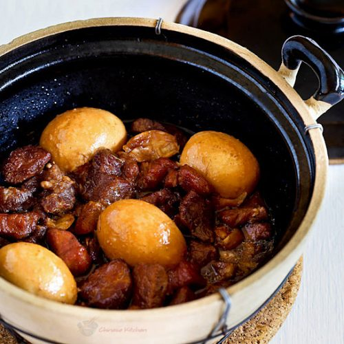

Chinese Braised Pork

Ingredients
- 2 tbsp vegetable oil
- 1 bulb garlic (separated but not peeled)
- 1 tsp peppercorns (cracked or smashed)
- 2 cloves garlic (minced)
- 1½ lbs boneless pork ribs or pork shoulder, cut into bite size pieces (675g)
- 3 tbsp sweet soy sauce
- 2 tsp sugar
- ¾ cup water (180ml)
- ½ tsp salt (or to taste)
- 4 hard boiled eggs (peeled)